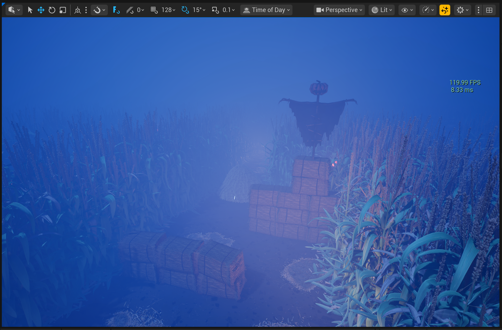
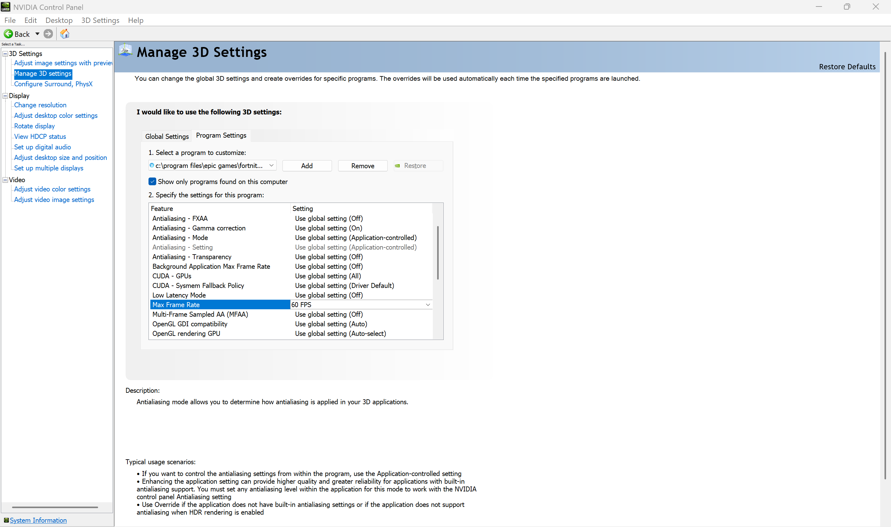

About six months after I finished my PC build, I started running into serious stability issues. Randomly, the display would cut to black and the GPU fans would instantly rev up to 100%.
It seemed like this only occurred when I had all of my digital content creation (DCC) applications open in the background while testing a graphics-intensive game. After some time, the problem appeared even when all applications were closed. I decided to investigate on Reddit to see if any others had run into the same problem.
I came across many threads like this, this, and this where others were experiencing the exact same issue; however, everyone offered a different solution to the problem. I tried many of the suggested solutions: reseating the GPU, checking all hardware cable connections including the troublesome 12VHPWR cable, running stress tests on individual components, and even buying a GPU support bracket. The stability issues persisted.
Eventually, I discussed my issue with Nvidia Tech Support, and after reviewing event logs, we concluded that an RMA of my RTX 4070 FE would be worthwhile.
Nvidia Support mentioned the wait time for a replacement would be a few weeks, so I went to Best Buy and bought an MSI RTX 3050 to stay productive (in the end, the replacement card arrived in just a few days. Major props to Nvidia for that!). After installing the 3050 and booting up my PC, I opened Unreal Editor for Fortnite (UEFN) to continue my work. Since UEFN is experimental to say the least, I figured digging deeper into the application was worth a shot.
After UEFN had loaded my content, I noticed the FPS display in the viewport was much lower than before. This was expected as I was using the backup GPU.
But it was a light bulb moment: running 120 FPS in the viewport all day long would be extremely taxing on the RTX 4070 GPU:
{kind=link}

I logged into the Unreal Engine Developer Forums and found other creators discussing GPU overheating issues here. While UEFN doesn’t currently allow a fixed frame rate in the viewport, I shared my workaround of adding the UEFN executable to the Nvidia Control Panel and capping FPS at 60:
{kind=link}

In the end, this whole experience taught me just how much stress the viewport in UEFN can put on a GPU. Monitoring FPS and capping max frame rate turned out to be crucial in keeping my system stable. I haven’t experienced this issue with other DCCs, so it seems to be unique to UEFN. Hopefully sharing what I went through helps other creators avoid the same kind of GPU burnout.